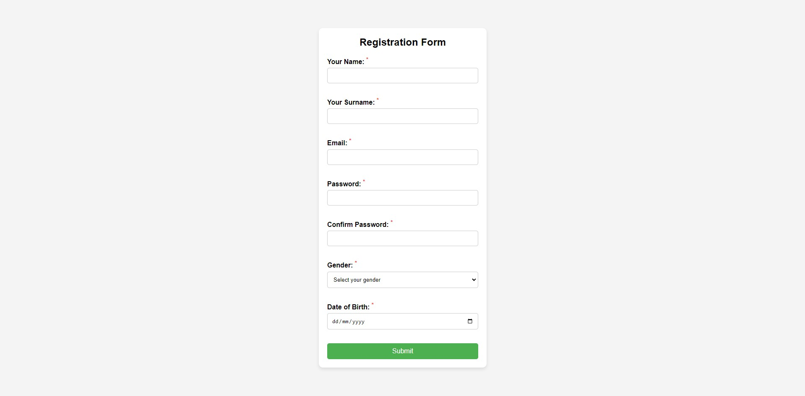
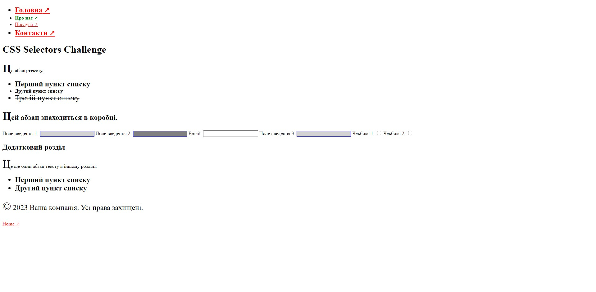
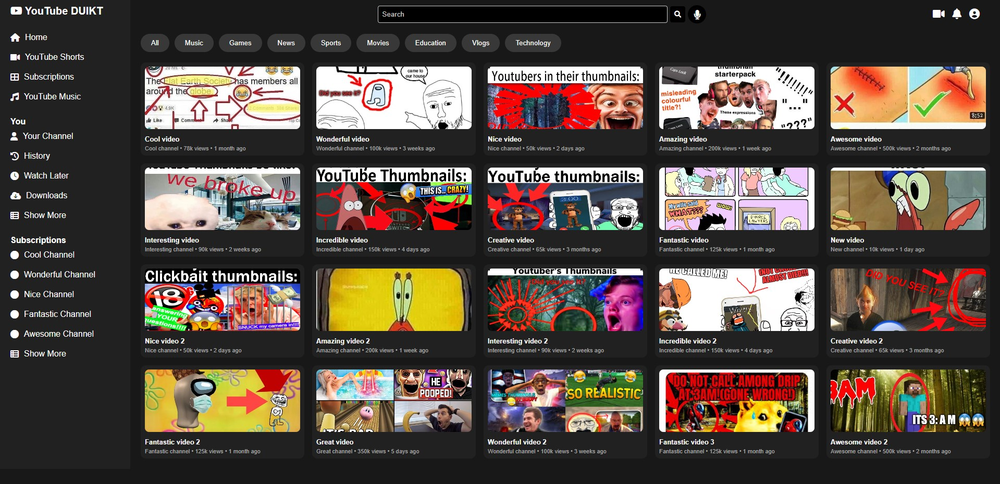
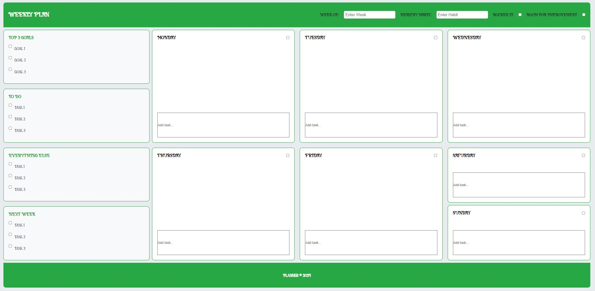

Список лабораторних робіт

Лабораторна робота №1
2024
Форма регістрації
Завдання цієї роботи полягало у створенні форми регістрації.
Детальніше...

Лабораторна робота №2
2024
CSS селектори
Завдання цієї роботи полягало у використанні CSS селекторів на сторінці.
Детальніше...

Лабораторна та Практична робота №3
2024
Ютуб копія
Завдання цієї роботи полягало у створенні копії головної сторінки вебсайту YouTube.
Детальніше...

Лабораторна робота №4
2024
Тижневий план
Завдання цієї роботи полягало у створенні сторінки тижневого плану користувача.
Детальніше...